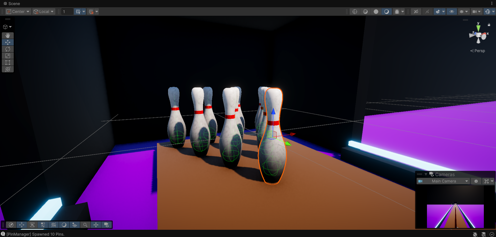
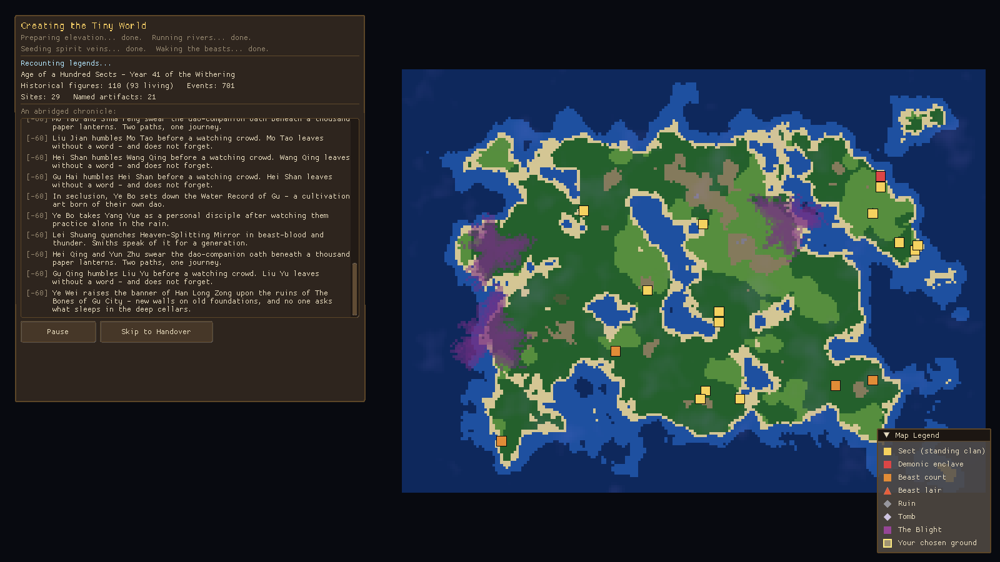
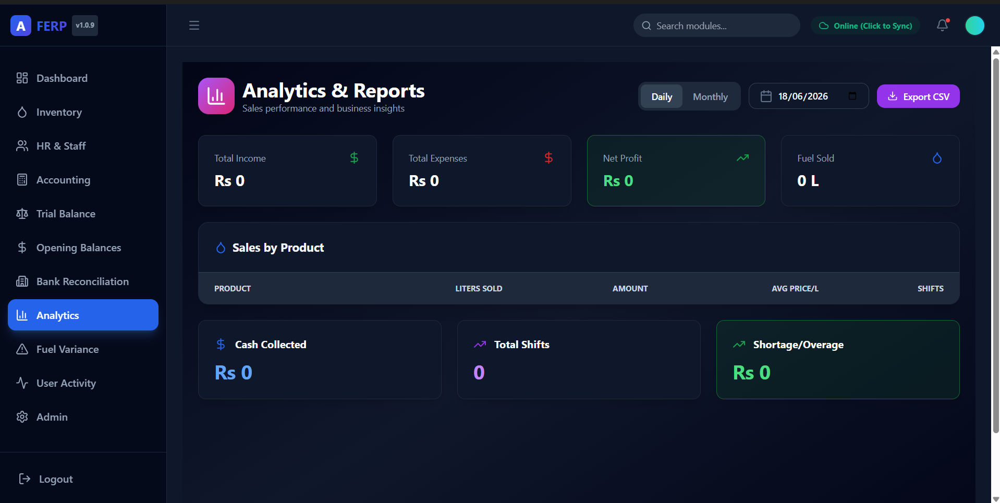

Stockholm, Sweden
Vice Lead Game Dev @ Gamucatex
Software Engineer
& Game Developer
Ibad Ullah. Five-plus years shipping desktop, web and embedded systems, and the game worlds above. Unity/C#, C++, .NET, netcode, procedural generation.
.png)
Hands of the End
A first-person magic-casting roguelike: you are the Mage guarding the last village of a dying world. Designed, coded and illustrated solo, fusing 2D pixel art with 3D worlds.

GyroSports
An asymmetrical cross-platform multiplayer game: the PC runs the heavy 3D simulation while your Android phone becomes a wireless motion controller, Wii Sports style.
Fred's Escape
A 3D escape room in Unreal Engine: Fred is trapped in a toy store. I engineered the reusable puzzle logic and object-interaction framework the team built its levels on.
.png)
Red Bread Repossession
A multiplayer third-person shooter on an authoritative client-server architecture: Netcode for GameObjects, UGS matchmaking, Relay NAT punch-through.

Project Pharaoh
Tower defense meets base building on Unity ECS (DOTS): massive hordes, and when the base falls you extract, spend the salvage, and push deeper. A roguelite loop.

Cultivation Fortress Sim
A Dwarf Fortress-inspired cultivation colony sim in modern C++20 with no game engine. SFML draws the pixels; every simulation, generation and UI system is hand-built under SOLID discipline.


FERP
An offline-first ERP SaaS for fuel stations in Pakistan, commissioned by a station owner and built end-to-end, from multi-tenant backend to desktop client.

Whack-A-Mole
A 2D arcade game treated like production software: event-driven architecture, coroutine state machines, difficulty that ramps by Lerp without spikes.
Also on the shelf
SmolTheftAuto
Team project — vehicle system: physics movement controller, entry/exit, modular seats, NPC persistence.
Unity · TeamVampireSurvivalClone
Geometric 2D survivors game drilled on design patterns: factories, pooling, observers.
C++ · RayLibExperience
Vice Lead Game Developer (part-time)
- Leading development on the Tectonicus Project, orchestrating a team of developers and mentoring interns.
- Refactoring a legacy codebase heavily reliant on God Class Scripts into modular, maintainable architectures.
- Managing the project via Trello, facilitating Sprint Reviews, maintaining comprehensive Documentation, and overseeing Pull Requests.
- Designing and developing internal tooling to accelerate team workflows.
Lead Software Engineer
- Successfully presented a strategic proposal to the BoD, advocating for Sabro's expansion into software-driven solutions.
- Spearheaded architecture, planning, and deployment of in-house platforms (ERP, Quality Control, CRM) using C#, .NET, Firebase, and Dynamics 365.
- Managed a cross-functional team of 10+ engineers (frontend, backend, embedded, QA); overseeing daily standups, Sprint Reviews, and conducting rigorous Code Reviews.
- Developed Modbus RTU tools for real-time HVAC control, accompanied by Flutter mobile MQTT dashboards.
- Authored technical documentation, B2B product demonstrations, and deployed Firebase-powered offline-first apps for factory personnel.
Software Engineer → Senior Developer
- Reverse-engineered imported AC board protocols and collaborated with embedded engineers for ESP32 firmware-to-desktop bridging.
- Digitized internal workflows, achieving an 80% reduction in manual log entries across QA and Inventory.
- Engineered a modular internal ERP system via WinForms, .NET, and SQL Server.
- Developed C# diagnostic software executing unit health checks spanning compressor RPM, relays, and PDF report generation.
Technical Support Engineer
- Provided remote technical support emphasizing Excel Macros automation and CRM data setups.
- Facilitated company transitions to cloud-shared tools like SharePoint.
Skills
Let's build
something
Open to software engineering and game development roles, and freelance work. If these systems look like your kind of problem, write to me.